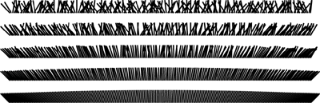
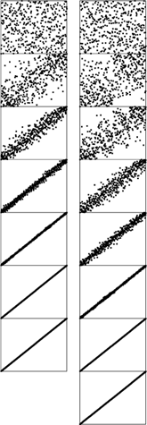
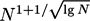
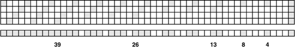
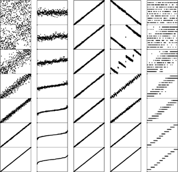

C++ Programming Robert Sedgewick - Princeton University Addison Wesley Professional Algorithms in C++, Parts 1–4: Fundamentals, Data Structure, Sorting, Searching, Third Edition
6.6. Shellsort
Insertion sort is slow because the only exchanges it does involve adjacent items, so items can move through the array only one place at a time. For example, if the item with the smallest key happens to be at the end of the array, N steps are needed to get it where it belongs. Shellsort is a simple extension of insertion sort that gains speed by allowing exchanges of elements that are far apart.
The idea is to rearrange the file to give it the property that taking every hth element (starting anywhere) yields a sorted file. Such a file is said to be h-sorted. Put another way, an h-sorted file is h independent sorted files, interleaved together. By h-sorting for some large values of h, we can move elements in the array long distances and thus make it easier to h-sort for smaller values of h. Using such a procedure for any sequence of values of h that ends in 1 will produce a sorted file: that is the essence of shellsort.
One way to implement shellsort would be, for each h, to use insertion sort independently on each of the h subfiles. Despite the apparent simplicity of this process, we can use an even simpler approach, precisely because the subfiles are independent. When h-sorting the file, we simply insert it among the previous elements in its h-subfile by moving larger elements to the right (see Figure 6.8). We accomplish this task by using the insertion-sort code, but modified to increment or decrement by h instead of 1 when moving through the file. This observation reduces the shellsort implementation to nothing more than an insertion-sort–like pass through the file for each increment, as in Program 6.5. The operation of this program is illustrated in Figure 6.9.
The top part of this diagram shows the process of 4-sorting a file of 15 elements by first insertion sorting the subfile at positions 0, 4, 8, 12, then insertion sorting the subfile at positions 1, 5, 9, 13, then insertion sorting the subfile at positions 2, 6, 10, 14, then insertion sorting the subfile at positions 3, 7, 11. But the four subfiles are independent, so we can achieve the same result by inserting each element into position into its subfile, going back four at a time (bottom). Taking the first row in each section of the top diagram, then the second row in each section, and so forth, gives the bottom diagram.
Sorting a file by 13-sorting (top), then 4-sorting (center), then 1-sorting (bottom) does not involve many comparisons (as indicated by the unshaded elements). The final pass is just insertion sort, but no element has to move far because of the order in the file due to the first two passes.
How do we decide what increment sequence to use? In general, this question is a difficult one to answer. Properties of many different increment sequences have been studied in the literature, and some have been found that work well in practice, but no provably best sequence has been found. In practice, we generally use sequences that decrease roughly geometrically, so the number of increments is logarithmic in the size of the file. For example, if each increment is about one-half of the previous, then we need only about 20 increments to sort a file of 1 million elements; if the ratio is about one-quarter, then 10 increments will suffice. Using as few increments as possible is an important consideration that is easy to respect—we also need to consider arithmetical interactions among the increments such as the size of their common divisors and other properties.
Program 6.5. Shellsort|
If we do not use sentinels and then replace every occurrence of "1" by "h" in insertion sort, the resulting program h-sorts the file. Adding an outer loop to change the increments leads to this compact shellsort implementation, which uses the increment sequence 1 4 13 40 121 364 1093 3280 9841 . . . .
template <class Item>
void shellsort(Item a[], int l, int r)
{ int h;
for (h = 1; h <= (r-l)[/]9; h = 3*h+1) ;
for ( ; h > 0; h [/]= 3)
for (int i = l+h; i <= r; i++)
{ int j = i; Item v = a[i];
while (j >= l+h && v < a[j-h])
{ a[j] = a[j-h]; j -= h; }
a[j] = v;
}
}
|
The practical effect of finding a good increment sequence is limited to perhaps a 25% speedup, but the problem presents an intriguing puzzle that provides a good example of the inherent complexity in an apparently simple algorithm.
The increment sequence 1 4 13 40 121 364 1093 3280 9841 . . . that is used in Program 6.5, with a ratio between increments of about one-third, was recommended by Knuth in 1969 (see reference section). It is easy to compute (start with 1, generate the next increment by multiplying by 3 and adding 1) and leads to a relatively efficient sort, even for moderately large files, as illustrated in Figure 6.10.
The effect of each of the passes in Shellsort is to bring the file as a whole closer to sorted order. The file is first 40-sorted, then 13-sorted, then 4-sorted, then 1-sorted. Each pass brings the file closer to sorted order.

Many other increment sequences lead to a more efficient sort but it is difficult to beat the sequence in Program 6.5 by more than 20% even for relatively large N. One increment sequence that does so is 1 8 23 77 281 1073 4193 16577 . . ., the sequence 4i+1 + 3.2i+ 1 for i >0, which has provably faster worst-case behavior (see Property 6.10). Figure 6.12 shows that this sequence and Knuth's sequence—and many other sequences—have similar dynamic characteristics for large files. The possibility that even better increment sequences exist is still real. A few ideas on improved increment sequences are explored in the exercises.
In this representation of shellsort in operation, it appears as though a rubber band, anchored at the corners, is pulling the points toward the diagonal. Two increment sequences are depicted: 121 40 13 4 1 (left) and 209 109 41 19 5 1 (right). The second requires one more pass than the first, but is faster because each pass is more efficient.

On the other hand, there are some bad increment sequences: for example 1 2 4 8 16 32 64 128 256 512 1024 2048 . . . (the original sequence suggested by Shell when he proposed the algorithm in 1959 (see reference section)) is likely to lead to bad performance because elements in odd positions are not compared against elements in even positions until the final pass. The effect is noticeable for random files, and is catastrophic in the worst case: The method degenerates to require quadratic running time if, for example, the half of the elements with the smallest values are in even positions and the half of the elements with the largest values are in the odd positions (See Exercise 6.36.)
Program 6.5 computes the next increment by dividing the current one by 3, after initializing to ensure that the same sequence is always used. Another option is just to start with h = N/3 or with some other function of N. It is best to avoid such strategies, because bad sequences of the type described in the previous paragraph are likely to turn up for some values of N.
Our description of the efficiency of shellsort is necessarily imprecise, because no one has been able to analyze the algorithm. This gap in our knowledge makes it difficult not only to evaluate different increment sequences, but also to compare shellsort with other methods analytically. Not even the functional form of the running time for shellsort is known (furthermore, the form depends on the increment sequence). Knuth found that the functional forms N(log N)2 and N1.25 both fit the data reasonably well, and later research suggests that a more complicated function of the form  is involved for some sequences.
We conclude this section by digressing into a discussion of several facts about the analysis of shellsort that are known. Our primary purpose in doing so is to illustrate that even algorithms that are apparently simple can have complex properties, and that the analysis of algorithms is not just of practical importance but also can be intellectually challenging. Readers intrigued by the idea of finding a new and improved shellsort increment sequence may find the information that follows useful; other readers may wish to skip to Section 6.7.
Property 6.7. The result of h-sorting a file that is k-ordered is a file that is both h- and k-ordered|
This fact seems obvious, but is tricky to prove (see Exercise 6.47).
|
Property 6.8. Shellsort does less than N(h – 1)(k – 1)/g comparisons to g-sort a file that is h- and k-ordered, provided that h and k are relatively prime|
The basis for this fact is illustrated in Figure 6.11. No element farther than (h – 1)(k –1) positions to the left of any given element x can be greater than x, if h and k are relatively prime (see Exercise 6.43). When g-sorting, we examine at most one out of every g of those elements.
The bottom row depicts an array, with shaded boxes depicting those items that must be smaller than or equal to the item at the far right, if the array is both 4- and 13-ordered. The four rows at top depict the origin of the pattern. If the item at right is at array position i, then 4-ordering means that items at array positions i–4, i–8, i–12, . . . are smaller or equal (top); 13-ordering means that the item at i–13, and, therefore, because of 4-ordering, the items at i–17, i–21, i–25, . . . are smaller or equal (second from top); also, the item at i–26, and, therefore, because of 4-ordering, the items at i–30, i–34, i–38, . . . are smaller or equal (third from top); and so forth. The white squares remaining are those that could be larger than the item at left; there are at most 18 such items (and the one that is farthest away is at i–36). Thus, at most 18N comparisons are required for an insertion sort of a 13-ordered and 4-ordered file of size N.

|
|
Property 6.9. Shellsort does less than O(N3/2) comparisons for the increments 1 4 13 40 121 364 1093 3280 9841 . . .|
For large increments, there are h subfiles of size about N/h, for a worst-case cost about N2/h. For small increments, Property 6.8 implies that the cost is about Nh. The result follows if we use the better of these bounds for each increment. It holds for any relatively prime sequence that grows exponentially.
|
Property 6.10. Shellsort does less than O(N4/3) comparisons for the increments 1 8 23 77 281 1073 4193 16577 . . .|
The proof of this property is along the lines of the proof of Property 6.9. The property analogous to Property 6.8 implies that the cost for small increments is about Nh1/2. Proof of this property requires number theory that is beyond the scope of this book (see reference section).
|
The increment sequences that we have discussed to this point are effective because successive elements are relatively prime. Another family of increment sequences is effective precisely because successive elements are not relatively prime.
In particular, the proof of Property 6.8 implies that, in a file that is 2-ordered and 3-ordered, each element moves at most one position during the final insertion sort. That is, such a file can be sorted with one bubble-sort pass (the extra loop in insertion sort is not needed). Now, if a file is 4-ordered and 6-ordered, then it also follows that each element moves at most one position when we are 2-sorting it (because each subfile is 2-ordered and 3-ordered); and if a file is 6-ordered and 9-ordered, each element moves at most one position when we are 3-sorting it. Continuing this line of reasoning, we are led to the following idea, which was developed by Pratt in 1971 (see reference section).
Pratt's method is based upon using the following triangle of increments, where each number in the triangle is two times the number above and to the right of it and also three times the number above and to the left of it.
1
2 3
4 6 9
8 12 18 27
16 24 36 54 81
32 48 72 108 162 243
64 96 144 216 324 486 729If we use these numbers from bottom to top and right to left as a shellsort increment sequence, then every increment x after the bottom row is preceded by 2x and 3x, so every subfile is 2-ordered and 3-ordered, and no element moves more than one position during the entire sort!
Property 6.11. Shellsort does less than O(N(log N)2) comparisons for the increments 1 2 3 4 6 9 8 12 18 27 16 24 36 54 81 . . .|
The number of increments in the triangle that are less than N is certainly less than (log2 N)2.
|
Pratt's increments tend not to work as well as the others in practice, because there are too many of them. We can use the same principle to build an increment sequence from any two relatively prime numbers h and k. Such sequences do well in practice because the worst-case bounds corresponding to Property 6.11 overestimate the cost for random files.
The problem of designing good increment sequences for shellsort provides an excellent example of the complex behavior of a simple algorithm. We certainly will not be able to focus at this level of detail on all the algorithms that we encounter (not only do we not have the space, but also, as we did with shellsort, we might encounter mathematical analysis beyond the scope of this book, or even open research problems). However, many of the algorithms in this book are the product of extensive analytic and empirical studies by many researchers over the past several decades, and we can benefit from this work. This research illustrates that the quest for improved performance can be both intellectually challenging and practically rewarding, even for simple algorithms. Table 6.2 gives empirical results that show that several approaches to designing increment sequences work well in practice; the relatively short sequence 1 8 23 77 281 1073 4193 16577 . . . is among the simplest to use in a shellsort implementation.
Table 6.2. Empirical study of shellsort increment sequencesShellsort is many times faster than the other elementary methods even when the increments are powers of 2, but some increment sequences can speed it up by another factor of 5 or more. The three best sequences in this table are totally different in design. Shellsort is a practical method even for large files, particularly by contrast with selection sort, insertion sort, and bubble sort (see Table 6.1). | N | O | K | G | S | P | I | 12500 | 16 | 6 | 6 | 5 | 6 | 6 | 25000 | 37 | 13 | 11 | 12 | 15 | 10 | 50000 | 102 | 31 | 30 | 27 | 38 | 26 | 100000 | 303 | 77 | 60 | 63 | 81 | 58 | 200000 | 817 | 178 | 137 | 139 | 180 | 126 | Key:
O 1 2 4 8 16 32 64 128 256 512 1024 2048 . . .
|
K 1 4 13 40 121 364 1093 3280 9841 . . . (Property 6.9) G 1 2 4 10 23 51 113 249 548 1207 2655 5843 . . . (Exercise 6.40) S 1 8 23 77 281 1073 4193 16577 . . . (Property 6.10) P 1 7 8 49 56 64 343 392 448 512 2401 2744 . . . (Exercise 6.44) I 1 5 19 41 109 209 505 929 2161 3905 . . . (Exercise 6.45) |
Figure 6.13 shows that shellsort performs reasonably well on a variety of kinds of files, rather than just on random ones. Indeed, constructing a file for which shellsort runs slowly for a given increment sequence is a challenging exercise (see Exercise 6.42). As we have mentioned, there are some bad increment sequences for which shellsort may require a quadratic number of comparisons in the worst case (see Exercise 6.36), but much lower bounds have been shown to hold for a wide variety of sequences.
These diagrams show shellsort, with the increments 209 109 41 19 5 1, in operation on files that are random, Gaussian, nearly ordered, nearly reverse-ordered, and randomly ordered with 10 distinct key values (left to right, on the top). The running time for each pass depends on how well ordered the file is when the pass begins. After a few passes, these files are similarly ordered; thus, the running time is not particularly sensitive to the input.

Shellsort is the method of choice for many sorting applications because it has acceptable running time even for moderately large files and requires a small amount of code that is easy to get working. In the next few chapters, we shall see methods that are more efficient, but they are perhaps only twice as fast (if that much) except for large N, and they are significantly more complicated. In short, if you need a quick solution to a sorting problem, and do not want to bother with interfacing to a system sort, you can use shellsort, then determine sometime later whether the extra work required to replace it with a more sophisticated method will be worthwhile.
Exercises |  6.33 Is shellsort stable? 6.33 Is shellsort stable?
| | 6.34 Show how to implement a shellsort with the increments 1 8 23 77 281 1073 4193 16577 . . ., with direct calculations to get successive increments in a manner similar to the code given for Knuth's increments. | | | | 6.35 Give diagrams corresponding to Figures 6.8 and 6.9 for the keys E A S Y Q U E S T I O N. | | 6.36 Find the running time when you use shellsort with the increments 1 2 4 8 16 32 64 128 256 512 1024 2048 . . . to sort a file consisting of the integers 1,2,...,N in the odd positions and N +1,N +2,...,2N in the even positions. | | 6.37 Write a driver program to compare increment sequences for shellsort. Read the sequences from standard input, one per line, then use them all to sort 10 random files of size N for N = 100, 1000, and 10,000. Count comparisons, or measure actual running times. | |  6.38 Run experiments to determine whether adding or deleting an increment can improve the increment sequence 1 8 23 77 281 1073 4193 16577 . . . for N = 10,000. 6.38 Run experiments to determine whether adding or deleting an increment can improve the increment sequence 1 8 23 77 281 1073 4193 16577 . . . for N = 10,000.
| | 6.39 Run experiments to determine the value of x that leads to the lowest running time for random files when the 13 is replaced by x in the increment sequence 1 4 13 40 121 364 1093 3280 9841 . . .; used for N = 10,000. | | 6.40 Run experiments to determine the value of α that leads to the lowest running time for random files for the increment sequence 1, α α ,α2, α3, α4, . . .; for N = 10,000. ,α2, α3, α4, . . .; for N = 10,000. | | 6.41 Find the three-increment sequence that uses as small a number of comparisons as you can find for random files of 1000 elements. | |  6.42 Construct a file of 100 elements for which shellsort, with the increments 1 8 23 77, uses as large a number of comparisons as you can find. 6.42 Construct a file of 100 elements for which shellsort, with the increments 1 8 23 77, uses as large a number of comparisons as you can find.
| | 6.43 Prove that any number greater than or equal to (h–1)(k–1) can be expressed as a linear combination (with nonnegative coefficients) of h and k, if h and k are relatively prime. Hint: Show that, if any two of the first h–1 multiples of k have the same remainder when divided by h, then h and k must have a common factor. | | 6.44 Run experiments to determine the values of h and k that lead to the lowest running times for random files when a Pratt-like sequence based on h and k is used for sorting 10,000 elements. | | 6.45 The increment sequence 1 5 19 41 109 209 505 929 2161 3905 . . . is based on merging the sequences 9.4i–9.2i +1 and 4i–3.2i +1 for i > 0. Compare the results of using these sequences individually and using the merged result, for sorting 10,000 elements. | | 6.46 We derive the increment sequence 1 3 7 21 48 112 336 861 1968 4592 13776 . . . by starting with a base sequence of relatively prime numbers, say 1 3 7 16 41 101, then building a triangle, as in Pratt's sequence, this time generating the ith row in the triangle by multiplying the first element in the i–1st row by the ith element in the base sequence; and multiplying every element in the i–1st row by the i+1st element in the base sequence. Run experiments to find a base sequence that improves on the one given for sorting 10,000 elements. | | | | 6.47 Complete the proofs of Properties 6.7 and 6.8. | | 6.48 Implement a shellsort that is based on the shaker sort algorithm of Exercise 6.30, and compare with the standard algorithm. Note: Your increment sequences should be substantially different from those for the standard algorithm. |
|